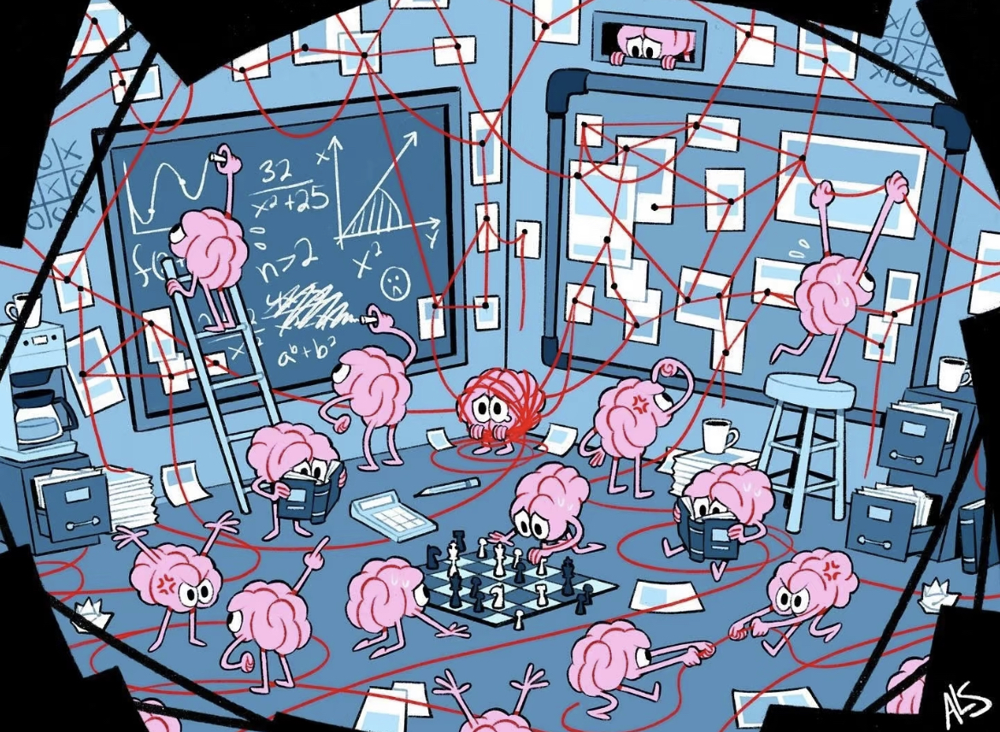
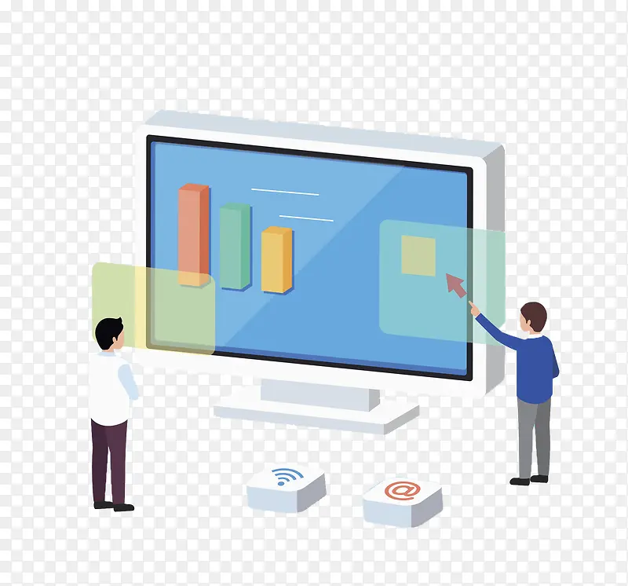

核心技术：读懂大脑的“情绪密码”
- 脑电大模型：我们利用先进的脑电大模型，能够深入分析你的大脑活动数据。
- 多种数据融合：它不只关注脑电波，还整合了多种信息，包括你在睡眠时的眼动、面部表情、语音情绪等，将它们融合在一起进行分析。
- 精准识别：通过这种多维度的数据，模型能更精准地捕捉到抑郁症的早期迹征，为后续的筛查和干预提供支持。

一体化平台：全方位筛查与干预
- 集成式设计：这是一个一体化脑机接口平台，将抑郁症筛查与干预功能完美结合。
- 智能筛查：通过对你多维度数据的全面评估，平台能生成一份个性化的抑郁症风险评分，帮助你了解自身的心理健康状况。
- 多层次干预：它不止于筛查，更提供一个多层次的调控系统，帮助你改善情绪和睡眠。
干预系统：个性化调控方案
- 量身定制：平台会根据你的具体生理和心理状态，为你设计一套专属的大脑调控方案。
- 多元化方法：这些方案涵盖多种科学有效的干预方式，包括音乐疗愈、灯光调控、注意力训练以及情绪反馈等。
- 核心目标：通过这些方式，帮助用户有效改善情绪、注意力和睡眠状态，实现更好的心理健康。